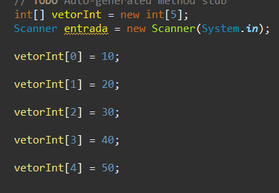

Ao longo do semestre, aprendemos diversas estruturas para construir um código á partir dos comandos necessários. E para deixar registrado, aqui estão alguns dos princípios de cada um.
Para armazenar variáveis, adicionamos a categoria: se irá ser caracter, um número inteiro, ou real, e até mesmo exibir um valor na tela... exemplos:
A estrutura do if e else nos ajuda a determinar dois caminhos diferentes á seguir. Se o resultado esperado for de tal modo,deve-se fazer tal coisa, porém, se o resultado acabar sendo diferente, devemos prosseguir de outra maneira. É um recurso que indica quais instruções o sistema deve processar de acordo com uma expressão booleana. Assim, o sistema testa se uma condição é verdadeira e então executa comandos de acordo com esse resultado. ... exemplos:
A estrutura do if e else nos ajuda a determinar dois caminhos diferentes á seguir. Se o resultado esperado for de tal modo,deve-se fazer tal coisa, porém, se o resultado acabar sendo diferente, devemos prosseguir de outra maneira. É um recurso que indica quais instruções o sistema deve processar de acordo com uma expressão booleana. Assim, o sistema testa se uma condição é verdadeira e então executa comandos de acordo com esse resultado. ... exemplos:
Em grupo,fizemos um projeto que incluia elaborar um jogo de tabuleiro, onde fariamos o Planejamento e Prototipagem, elaboramos a estética do tabuleiro, e o código do mesmo. ultilizando vetores para armazenar as informações de cada "casa" do tabuleiro. O código a seguir do meu grupo:
Aqui, adicionamos casos para determinar o que fazer ao cair em determinada casa, qual posição permanecer...etc.
Aqui,determinamos qual dos dois jogadores venceu o jogo, a partir do if e else; "(se)o jogador chegou até a casa 25: ganhou. (senao):perdeu".
A estrutura controlada se trata de um determinado número de vezes que você permite a execução acontecer. Exemplo=
Usa-se o vetor para armazenar um determinado número de informações.Podemos determinar os valores de cada vetor, ou simplesmente pedir ao usuário determina-los. Exemplo=
Para exibir os valores armazenados no vetor:
Para armazenar palavras/frases